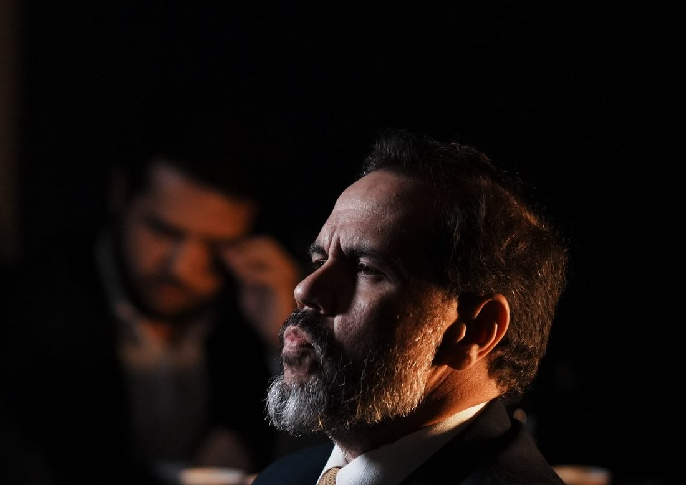
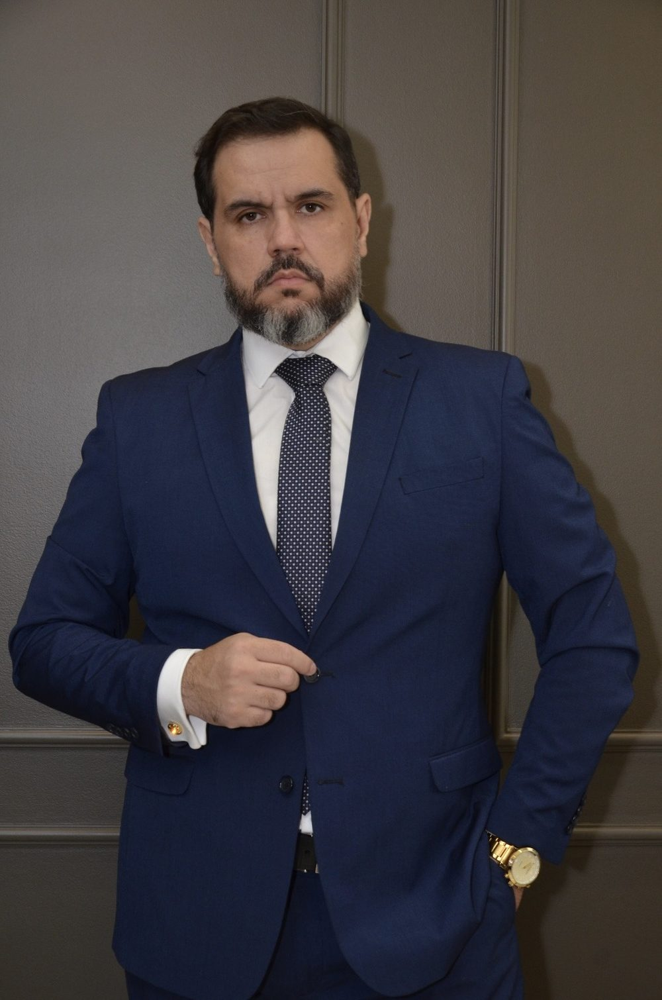
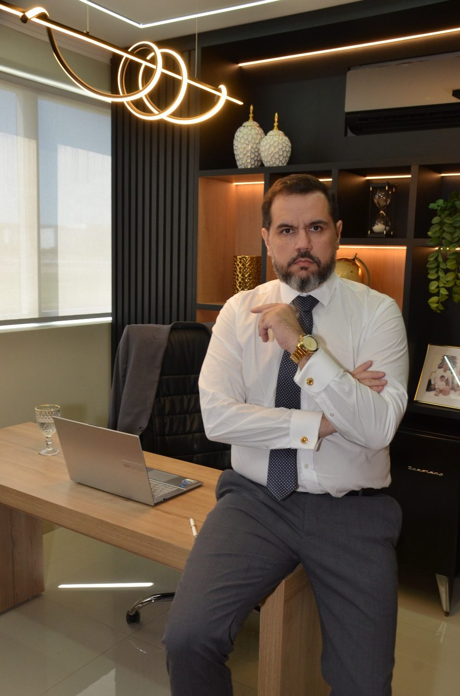
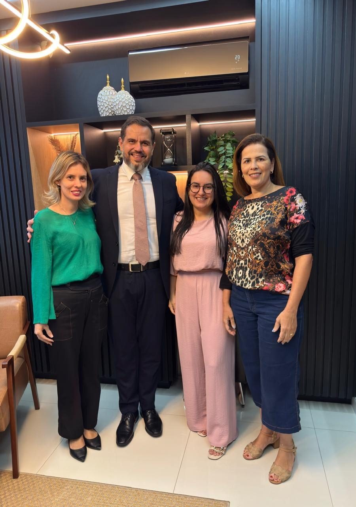

Advocacia Estruturada
Para advogadas e advogados nos primeiros 3 (três) anos de carreira que não querem começar sozinhos: conquistar os primeiros clientes, atender com segurança e organizar a rotina do escritório, com alguém ao lado, passo a passo.
Formar-se não ensina a ter clientes, a atender com segurança nem a organizar o escritório.
A faculdade ensina o direito. A prática pede também relacionamento, atendimento e gestão. É nesse intervalo que a maioria dos advogados em início de carreira trava.
Ninguém segura na sua mão
- Você sai da faculdade com o diploma e sem ninguém para perguntar.
- Decide sozinho quanto cobrar, o que dizer ao cliente e como organizar o dia.
- Cada dúvida parece sinal de que você não nasceu para isso.
- O cliente espera segurança de quem ainda está aprendendo a senti-la.
Não é falta de talento. É falta de alguém ao lado.
Os desafios de quem começa na advocacia
Os primeiros clientes
Como construir relacionamento e presença ética, sem atalhos e sem captação vedada.
Atendimento e honorários
Como ouvir, mostrar os riscos e explicar o valor do trabalho sem insegurança.
A rotina do escritório
Como manter prazos, agenda, financeiro e tarefas em um fluxo simples, que cabe no dia.
O que costuma travar o início

O que você quer de verdade
- Entrar na primeira consulta sabendo o que perguntar e o que dizer.
- Falar o valor dos honorários olhando nos olhos, sem pedir desculpas.
- Ter um escritório que funciona, mesmo sendo pequeno.
- Saber para onde vai o próximo mês, e não só o próximo prazo.
- Ter com quem conversar quando bater a dúvida.
Do sozinho ao acompanhado
Começando sozinho
- Decide no improviso.
- Cobra com medo.
- Aprende só pelo erro.
- Rotina apagando incêndio.
Com a mentoria
- Decide com método.
- Cobra com clareza.
- Aprende com quem já passou por isso.
- Rotina com fluxo e prazos sob controle.
Três eixos, um fio condutor
Captar, atender e organizar. E, em todos os eixos, o que sustenta o trabalho: a segurança profissional.
Captar
Rede de relacionamento, indicação por utilidade e presença ética.
- Mapa da sua rede de relacionamento
- Indicação que nasce de utilidade, não de insistência
- Presença sóbria e ética no Instagram
- Limites éticos da captação
Atender
Primeira consulta, honorários claros e entrada segura do cliente.
- Primeira consulta: ouvir mais do que falar
- Perguntas certas para cada tema
- Riscos explicados, sem garantia de êxito
- Honorários apresentados com clareza
- Fechamento: contrato, procuração e documentos
Organizar
Prazos, sistema de gestão, fluxo de tarefas e financeiro mínimo.
- Controle de prazos e intimações
- Escolha e uso do sistema de gestão
- Fluxo do escritório e divisão de tarefas
- Financeiro mínimo e rotina semanal
- Quando e como delegar

Segurança profissional
É a convicção de que você merece o lugar que ocupa e pertence a ele, sustentada por método: saber captar, atender e organizar.
Merecer
Reconhecer o valor do próprio trabalho e cobrar por ele com clareza, sem pedir desculpas pelo preço.
Pertencer
Sentir-se parte da profissão e do espaço que ocupa nela, e agir com a segurança de quem está no lugar certo.
8 (oito) encontros em 120 (cento e vinte) dias
Encontros individuais de 1 (uma) hora e 30 (trinta) minutos, a cada 15 (quinze) dias. Cada etapa termina com uma tarefa prática e um material para usar no seu escritório.
Diagnóstico e fundação
Você leva: diagnóstico pessoal e declaração de posicionamento em 2 (duas) frases.
Rede e captação ética
Você leva: mapa de rede com 30 (trinta) pessoas e lista de conferência ética.
Primeira consulta
Você leva: roteiro de primeira consulta e ficha de atendimento.
Honorários em degraus
Você leva: planilha de precificação e modelo de proposta.
Fechamento e entrada do cliente
Você leva: modelo de contrato de honorários, lista de documentos e mensagem de boas-vindas.
Rotina e escritório enxuto
Você leva: fluxograma do escritório e planilha financeira.
Trilha prática de direito de família
Você leva: listas de conferência de documentos de direito de família.
Encerramento
Você leva: plano individual dos próximos 90 (noventa) dias.
Direito de família, na prática
Primeiras consultas em casos anonimizados, listas de conferência de documentos por tema e o caminho da consulta ao contrato, passo a passo. Casos sempre anonimizados, em respeito ao sigilo profissional.
O que você leva
Documentos prontos para adaptar e usar no seu escritório já no dia seguinte.
Presença Profissional
O treinamento emocional que transforma autoconhecimento em atendimento.
Reconheça o que trava você na hora de cobrar, negociar e dizer não.
Leia o momento emocional do cliente antes de falar de tese e de honorários.
Conduza conversas difíceis com calma, firmeza e empatia.
Leve para a rotina uma prática simples de equilíbrio entre a pessoa e o profissional.

Anderson Arruda
Advogado desde 2013 e sócio do Alves & Arruda Advogados, ao lado da advogada Roberta Alves. Atua em direito de família e amplia a atuação para o direito empresarial, com foco em planejamento patrimonial e sucessório.
A mentoria nasce do que aprendi corrigindo erros nos meus primeiros anos, em especial o de cobrar mal, e do que ainda construo no escritório.
Acompanhar quem começa
Já acompanhei advogadas em início de carreira, no escritório, em conversas sobre atendimento, honorários e rotina. A mentoria organiza essa experiência em um caminho com etapas, tarefas e devolutiva.
Entre os encontros
Tarefa prática para fazer no escritório, com devolutiva do mentor.
Encontros coletivos
2 (dois) encontros opcionais para trocar com os colegas.

Para quem é e para quem não é
Para quem é
- Advocacia com 0 (zero) a 3 (três) anos de formado.
- Quem quer construir uma base antes de crescer.
- Quem aceita praticar com tarefas reais.
- Quem atua, ou quer atuar, em direito de família.
Para quem não é
- Quem procura fórmula de resultado rápido ou garantido.
- Quem espera captar clientes de forma agressiva ou vedada.
- Quem não consegue reservar tempo para as tarefas.
Quatro passos para começar
Conversa inicial
Sem compromisso, para entender o seu momento.
Alinhamento
Expectativas, escopo e regras, de forma transparente.
Contrato
Escopo, duração, saída, reembolso e sigilo, por escrito.
Primeiro encontro
Diagnóstico e declaração de posicionamento.
Antes de conversar
A mentoria é individual?
Sim. O acompanhamento é 1 a 1: só você e o mentor. Por isso o número de vagas é limitado.
Quanto tempo dura e como são os encontros?
São 120 (cento e vinte) dias, com 8 (oito) encontros a cada 15 (quinze) dias, de 1 (uma) hora e 30 (trinta) minutos. Entre os encontros, você pratica uma tarefa real no escritório e recebe devolutiva.
Preciso atuar com direito de família?
Não. A trilha de direito de família é prática e opcional na sua rotina, e os três eixos (captar, atender e organizar) servem para qualquer área.
E se eu tiver dúvidas entre os encontros?
Há 2 (duas) janelas por semana, em horário combinado, para tirar dúvidas do dia a dia.
A mentoria promete clientes ou faturamento?
Não. Ela entrega método, material e acompanhamento. Não substitui o estudo técnico nem a sua responsabilidade profissional, e não oferece atalho nem fórmula pronta.
O que é o bônus Presença Profissional?
É o treinamento emocional incluso na mentoria. Ele transforma autoconhecimento em atendimento: você reconhece o que trava a sua atuação e aprende a conduzir o cliente com clareza.
Como começo?
Pelo WhatsApp, em uma conversa inicial sem compromisso. As condições são apresentadas nela.
Vagas limitadas
O acompanhamento é individual. Comece por uma conversa sem compromisso, direto com o mentor.
WhatsApp: 62 98510-9393 · Atendimento das 9 (nove) às 18 (dezoito) horas